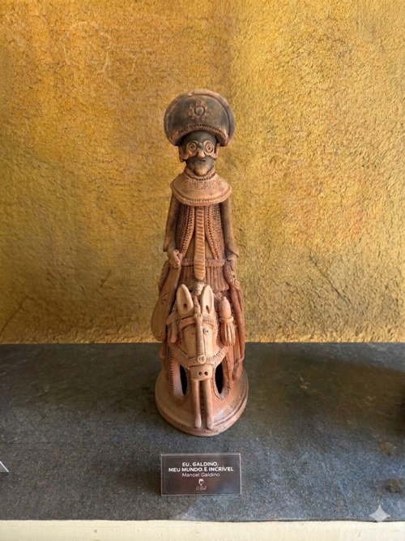

Mestre Galdino
O fantástico e o grotesco no barro do Alto do Moura.
Manoel Galdino de Freitas criou uma linguagem própria no Alto do Moura: bichos, monstros, personagens híbridos e versos de cordel transformaram o barro em mundo fantástico.
Mestre Galdino foi ceramista, cordelista e violeiro, nascido em São Caetano e falecido no Alto do Moura. Depois de muitas ocupações, passou a se dedicar à cerâmica na década de 1970.
Diferente da representação mais direta do cotidiano, Galdino criou figuras grotescas, híbridas e inventadas: lampião-sereia, mulher com corpo de réptil, monstros homem-animal e criaturas nascidas de sonho, memória e humor.
Sua produção incorporava versos de cordel escritos em papéis enrolados e colocados nas peças, aproximando palavra, barro e narrativa popular.
Mestre Galdino une barro e palavra: suas peças aparecem ligadas a personagens como Manuel ou Mané Pãozeiro, castelos imaginários, bichos e autorretratos. Cada obra carregava poesia e história, e a continuidade do ofício foi assumida como missão familiar no Memorial Mestre Galdino, no Alto do Moura.
No barro de Galdino, o real aprende a sonhar.
Para observar na peça
- Figuras híbridas e fantásticas
- Ausência ou economia de pintura
- Humor, estranhamento e expressividade
- Relação entre escultura e cordel
Materiais e técnica
Galeria de peças e referências de estilo
Obras e peças públicas reunidas para reconhecer linguagem, materiais e técnica. As peças da exposição são vistas apenas ao vivo.

Fontes e créditos
- Enciclopédia Itaú Cultural — Mestre Galdino http://enciclopedia.itaucultural.org.br/pessoas/30208-mestre-galdino
- Wikipédia — Mestre Galdino https://pt.wikipedia.org/wiki/Mestre_Galdino
- Referência de acervo da equipe — OCR e conferência visual Páginas fotografadas/OCR revisado: 038 e 040. Fonte interna de referência da equipe, enviada em 02/07/2026.